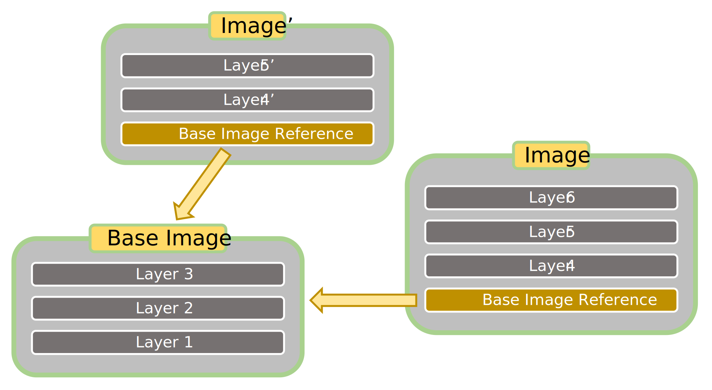
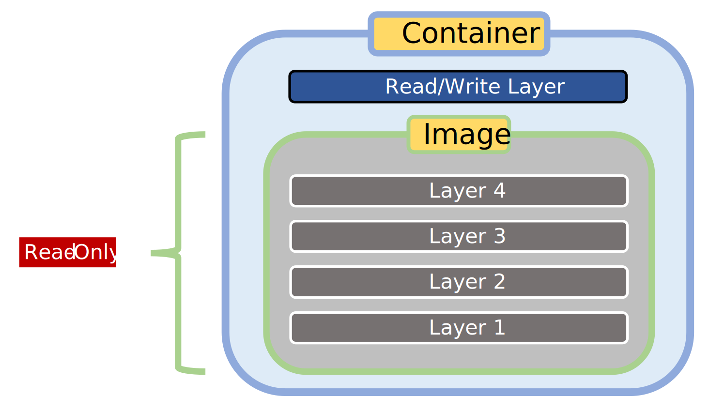
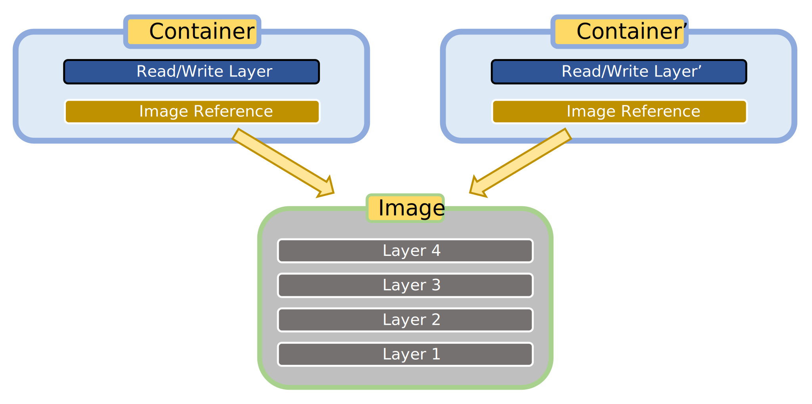
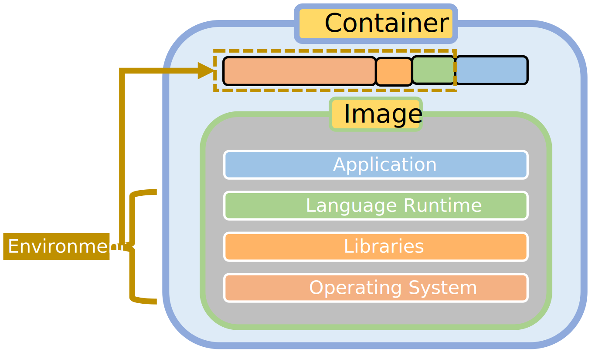
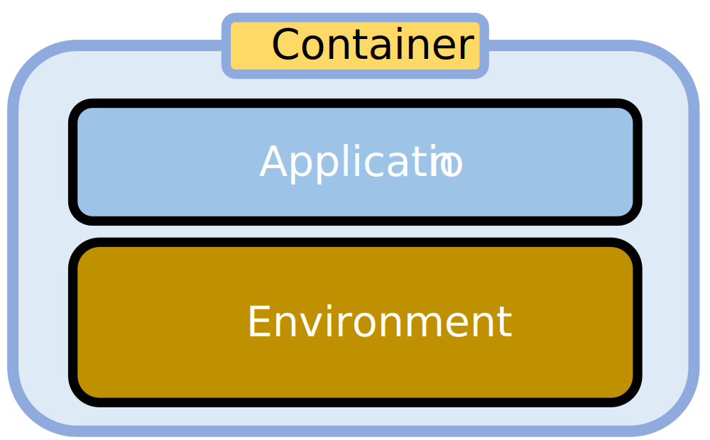
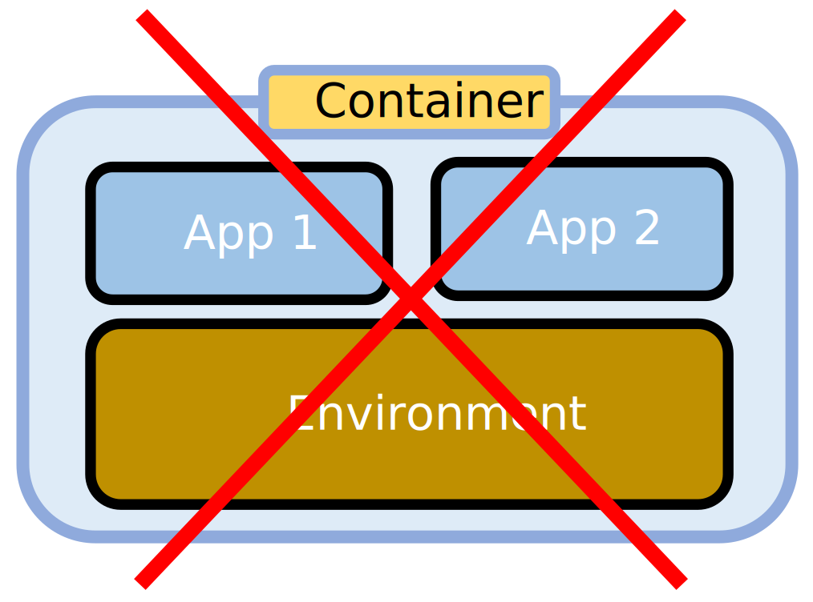
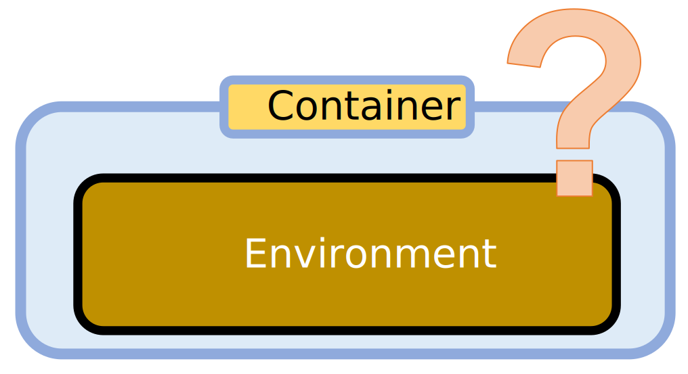

Images and Containers
Images
Images are read-only templates for containers. They contain the software to be containerized (an application, model, service, or otherwise) as well as the underlying stack of dependencies (operating system, language runtime, libraries, and so on) that together comprise the environment required by the software. Images cannot be run, instead they have to be instantiated and executed as containers.
Images are built up based on instructions in a build script. For Docker containers the build script is called a “Dockerfile”. Writing a build script is therefore central to containerization.
A built image can be stored and distributed as a file, or shared via an container registry such as Docker Hub. When instead sharing your software as source code, include the build script so as to enable others to easily build and customize their own image and deploy your software in a container.
Images are built up incrementally by adding layers to the stack via the build script. Image building can therefore start from a base image in which several of the necessary layers are already present. A vast collection of images can be obtained from public image registries. A typical starting point is a base image containing an operating system and language runtime suitable for supporting your software.
{kind=link}
Warning
A base image pulled from a public container registry might be compromised. For security, prefer well-vetted official images. For example, official images containing a Python runtime can be found here on Docker Hub.
Note
By carefully selecting specific versions for the base image and further layers, a build script can be made reproducible in the sense that it results in a functionally identical container image every time that it is used to create an image.
Tip
The Docker build system has added support for multi-stage builds. This enables more flexible yet maintainable builds.
Containers
Technical background
Containers are instances of images. They can be started, stopped, re-started, and destroyed. To make this possible, a read-write layer is added on top of the read-only image.
{kind=link}
From a single image, multiple containers can be instantiated and started in parallel, but each with a separate read-write layer. Containers therefore run in isolation by default: they do not share the dynamic state contained in the read-write layer. This requires only a single copy of the image because instead of including the image that they are instantiated from, containers reference the image. Therefore, though the above graphic provides a good illustration of what a container image is conceptually, the technical reality is more accurately represented as follows:
{kind=link}
Practical perspective
Though it is important to understand the technical background of how containers are built up and instantiated, for everyday use it is helpful to take a more practical perspective. A container is effectively an isolated environment that provides for the needs of an application or service. The environment is comprised of an operating system and other dependencies, such as libraries and language runtime, together with their dynamic state (in the read/write layer).
{kind=link}
The application is installed inside the container on top of this environment. Therefore, in practical terms, a container contains an application (or service) and its environment, at least for the common use case.
{kind=link}
It is of course possible to install multiple applications in a container. Doing so would reduce the benefits of containerization: by sharing a container, the applications are no longer isolated, which makes their interactions harder to formalize and manage. It is therefore good practice to have only one application or service per container instead of multiple.
{kind=link}
Environment-only containers
During development and testing, containers can even be useful when holding just an environment. For example, by instantiating a container from a downloaded image that provides a particular version of a language runtime, you can use the practical facilities of that language environment such as its REPL and package manager without directly installing the language runtime on your machine.
{kind=link}
This can be convenient for a number of reasons:
Pulling a container image from a public container registry is faster than doing a regular installation.
The environment is pre-configured and ready to go: no need to set environment variables and so on.
You can use incompatible versions of a particular environment side-by-side on the same machine without conflicts.
You can be sure that the container can modify only the parts of the host filesystem that you give it access to.
The container and image can speedily be removed without leaving leftovers.